Практичний досвід · журнал «ДентАрт» 2015 №1 (78)
Реставрація контактних поверхонь верхніх передніх зубів 2
Restoration of the Contact Surfaces of Upper Anterior Teeth 2
Магічні 7 років тому була опублікована наша стаття про реставрацію контактних поверхонь верхніх передніх зубів, яка стала практичним навчальним посібником для тих, хто вчиться на курсах або осягає майстерність прямої реставрації зубів шляхом самоосвіти. Фізично цей номер журналу вже давно не існує, тому з'явилися пропозиції надрукувати її знову! Для повторного виходу у світ статті важливим було показати стан реставрованих зубів у динаміці, проте нова зустріч із пацієнткою принесла розчарування і досаду...
Отже, повторна, перероблена і доповнена, публікація та детальна демонстрація власної техніки реставрації контактних поверхонь передніх зубів, яку використовуємо ось уже 20 років.
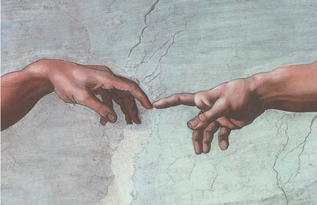
Фрагмент фрески «Створення людини» Мікеланджело Буонарроті з розпису Сікстинської капели (1508-1512) у Ватикані (інтерпретація Олега Перепелиці, 2008)
Техніки препарування дефектів зубів на контактних поверхнях розроблені досить докладно: препарування з доступом через оральну поверхню, препарування з доступом через вестибулярну поверхню, техніка мінімальної інвазії (тунельне, щілиноподібне препарування). Однак за всього різноманіття ці техніки відновлення контактних поверхонь передніх зубів залишаються невідпрацьованою, слабкою ланкою у прямій реставрації, особливо з точки зору відповідності форми реставрацій правилам нормальної анатомії зубів.
В описі відновлення контактних поверхонь і контактних пунктів ми беремо за основу концепцію конструкції реставрованого зуба, згідно з якою реставрований зуб — це триєдина конструкція, яка складається з основи, що реставрується, власне реставрації та адгезивного з'єднання між ними. Порушення кожної з трьох складових конструкції реставрованого зуба веде до необхідності лагодження, а якщо це неможливо, до заміни власне реставрації та адгезивного з'єднання. У відповідності з цією концепцією, при реставрації зубів з метою тривалого збереження цілісності конструкції (довговічності реставрації) слід власне реставрації надати анатомічні, біомеханічні, оптичні та інші властивості, максимально близькі до властивостей основи, що реставрується.
Щоб виконати таку реставрацію, слід визначити стан зубних тканин, що реставруються, вибрати реставраційні матеріали, спланувати реставраційну конструкцію, з'єднати її із зубними тканинами і перевірити конструкцію на відповідність проекту.
Клінічна анатомія контактних поверхонь
Зуби об'єднуються в зубному ряду контактними поверхнями, які утворюють контактні пункти.
Форма коронки, та частина кожного переднього зуба, що видима пацієнтові і оточуючим людям, утворюється вестибулярною поверхнею, обмеженою ріжучим краєм, шийкою і двома контактними поверхнями. Анатомічно верхні передні зуби розташовані віялоподібно, розходяться згори донизу, але в зубному ряду коронки зубів створюють враження того, що вони сходяться. Ця ілюзія створюється завдяки асиметричності коронок зубів, званої ще ознакою кута коронки. Клінічно згідно з цією ознакою зеніт шийки центральних різців та ікол віддалений від середньої лінії коронки латерально, латеральні куточки різців кругліші, ніж медіальні, а вершини рвучих горбиків ікол зміщені медіально від середини коронки. Така виражена асиметрія шийки і ріжучого краю коронок верхніх передніх зубів поєднується і з асиметрією контактних поверхонь: усі латеральні поверхні опукліші, всі медіальні поверхні — пряміші. Виражені відмінності двох форм контактних поверхонь — дистальної і медіальної — властиві всім зубам, і переднім, і бічним.
Якщо порівняти фронтальну форму коронки будь-якого зуба з його рентгенівським знімком, на якому видно топографію зубних тканин, легко помітити, що всі опуклості коронки утворюються лише емаллю, а дентин, починаючи від шийки зуба, проходить вертикально, ніде не розширюючись, і тому не бере участі у формуванні контактних поверхонь. Ця особливість топографії коронкової частини зубів має і клінічне значення — реставрувати контактні поверхні слід лише прозорими, емалевими відтінками.
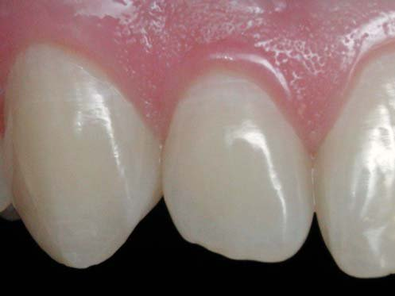
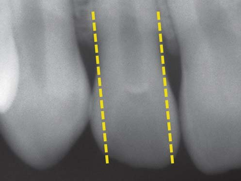
По фронтальному профілю контактні поверхні передніх зубів мають S-подібну форму, яка складається з випуклої частини та увігнутої частини.
Опукла частина контактних поверхонь на рівні найбільшої ширини коронки утворює дві діаметральні контактні точки, розташовані на різній висоті. Дві суміжні контактні точки двох зубів, що стоять поруч, утворюють контактний пункт, площа якого для передніх зубів дорівнює приблизно 1 мм².
Увігнута частина контактної поверхні забезпечує плавний перехід на шийку зуба, форма якої близька до циліндра. Завдяки такій формі на рівні шийок правильно розташованих різців можна стійко встановити міжзубний клинчик, але якщо паралельність шийок порушена, наприклад, при скупченості, нахилах або поворотах зубів, клинчик при установці зміщується вглиб міжзубного проміжку, створюючи ризик пошкодження міжзубного сосочка.
У зубному ряду висота коронок усіх зубів, від центрального різця до третього моляра, послідовно зменшується. За винятком ікол, яким у зубному ряду функціонально відведена особлива роль, найвища коронка у верхнього центрального різця (стандартно 10,5 мм) і найнижча — у верхнього третього моляра (стандартно 6,5 мм), але най-найвища коронка у нижнього ікла (стандартно 11 мм). Незважаючи на те, що дві коронки суміжних різнойменних зубів мають різну висоту, суміжні, дотичні точки на контактних поверхнях розташовуються на одному рівні. Такий порядок у зубному ряду забезпечується різною опуклістю медіальної і латеральної/дистальної поверхонь. Іклові, що становить виняток у послідовному зменшенні висоти коронок зубів, інтеграція в зубному ряду забезпечується його особливою формою. З іншого боку, різна опуклість контактних поверхонь зубів призводить до того, що в межах коронки верхніх різців позиція латеральної і медіальної контактних точок відрізняється по вертикалі приблизно на 1 мм: на латеральній поверхні — ближче до шийки зуба, на медіальній — ближче до ріжучого краю.
У результаті контактні пункти верхніх передніх зубів розташовуються по дузі, що повторює позицію ріжучих країв або ж вигин верхнього краю нижньої губи. Найнижче у верхньому зубному ряду розташований контактний пункт між двома центральними різцями.
Клінічно велике значення мають переходи контактних поверхонь у вестибулярну й оральну поверхні.
Перехід контактних поверхонь у вестибулярну поверхню утворює досить виражений валик, що обмежує зону відображення. Ця зона, обмежена, крім крайових валиків, також екватором коронки і ріжучим краєм, збігається по площині із зоною відображення обличчя, і тому вони відображають світло, що падає спільно і гармонійно. Відсутність такого спільного відбиття світла при нахилах різців орально (опістогнатія) або вестибулярно (прогнатія) призводить до розбалансування цілісного сприйняття дизайну обличчя. Віддзеркалення світла посилюється, що робить зуби більш яскравими і виразними у сприйнятті оточуючими не тільки у випадку світлих зубів, але і якщо рефлекторна зона центральних зубів увігнута подібно до параболічного дзеркала або верхні латеральні різці розташовані у площині центральних різців при трапецієподібній формі зубного ряду.
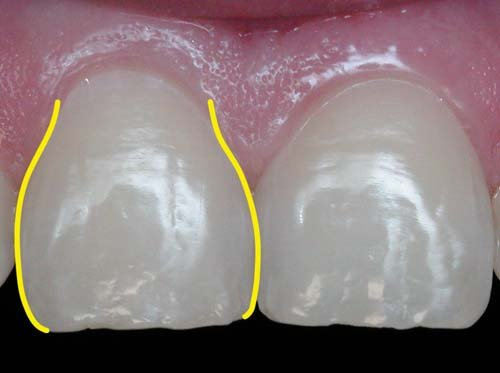
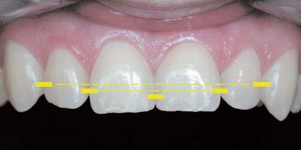
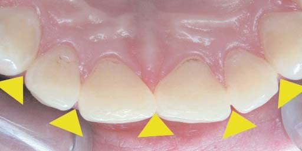
Перехід контактних поверхонь в оральну поверхню формує крайові валики, які замикають по краях піднебінну, язичну ямку. Відновлені крайові валики будуть захищати міжзубні сосочки від пошкоджень під час функції навіть при не дуже щільних контактних пунктах.
Передні зуби контактують між собою оральними поверхнями, оскільки вони розташовані по дузі. Внаслідок цього контактні простори передніх зубів завжди відкриті у вестибулярний бік. Дотримання цього правила при реставрації передніх зубів дозволяє відтворити ефект окремо розташованих коронок зубів, що становлять єдиний зубний ряд. І навпаки, недотримання цього правила призводить у реставрації до штучного збільшення поперечних розмірів коронок і створює зоровий ефект «суцільної білої стіни», що спостерігається у реставраційних конструкціях, де коронки з'єднані між собою (мостовидна, шинуюча конструкції, металокерамічна дуга).
Контактні поверхні беруть участь у розподілі жувального навантаження через деформацію зубів під час стискування щелеп. При жувальному навантаженні коронки зубів деформуються, скорочуючись по висоті і розширюючись у боки. Через таку деформацію коронок зубів значна частина навантаження не тільки поглинається, а й передається по зубному ряду через збільшення щільності контактних пунктів. Щільність контактних пунктів, таким чином, є змінною величиною, залежить від сили стискання зубних рядів, і слід розуміти, що, визначаючи щільність контактних пунктів, ми визначаємо її в стані спокою. Якщо деформація зубів надмірна, в емалі з'являються вертикальні тріщини — очевидне свідчення функціонального перевантаження зубів внаслідок парафункцій, бруксизму.
Клінічно виконання всіх цих правил нормальної анатомії забезпечить швидку побудову правильної форми контактних поверхонь і контактних пунктів, а з ними і правильної форми коронок зубів, і правильної форми зубного ряду.
Наше моделювання об'ємними матрицями
На етапі заміни реставраційної концепції «Дентсплай» 80-х років на біоміметичну концепцію (1996) ми перейшли і від моделювання контактних поверхонь матрицею з вирізом до моделювання кожної контактної поверхні індивідуально виконаною об'ємною матрицею. Спочатку ми виконуємо реставрацію в основному — послідовно центральну частину, оральну поверхню, вестибулярну поверхню. Потім відновлюємо контактні поверхні — латеральну і медіальну. Якщо ми реставруємо групу передніх зубів (фронт), то порядок відновлення контактних поверхонь має бути таким: від ікол до центру, і останнім створюється контактний пункт між центральними різцями.
Виготовлення індивідуальної об'ємної матриці
Для виготовлення індивідуальної контурної матриці зі стандартної лавсанової смужки ми використовуємо пристосування, що нагадує фрагмент предметного столика легендарної стоматологічної установки УС-30. Працюючи на такій установці ще на початку 1980-х, ми переконалися, що у стоматологічному кабінеті найбільш вдалим місцем для контурування матриць є край довгої хвилястої металевої смужки на предметному столику. Нині ми використовуємо фрагмент цієї смужки, прикріплений на одному з кутів стоматологічних меблів.
У нашій клініці це пристосування, виконане вже з неіржавіючої сталі, називають «хвилею» за формою робочої поверхні. Ми вручаємо «хвилю» всім випускникам наших практичних курсів як пристосування для відтворення нашої техніки моделювання контактних поверхонь. Ви можете самі замовити собі таке пристосування у найближчій майстерні, де працюють з металом, за рисунком, який відтворює «хвилю» в натуральну величину. Зверніть увагу, що робочою поверхнею є лише плоский край (для контурування менш опуклих медіальних матриць) і наступний за ним куточок (для контурування більш опуклих латеральних матриць), другий вигин є просто частиною вихідного дизайну УС-30.
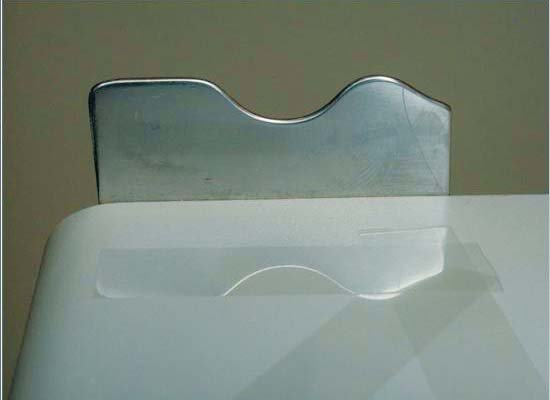
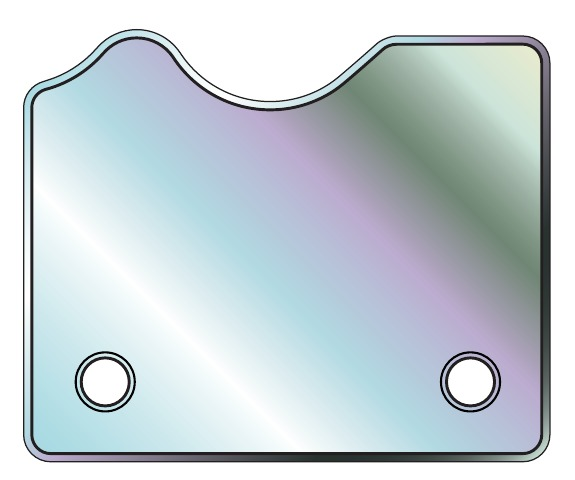
Для виготовлення контурної матриці потрібно лавсанову смужку шириною 10-11 мм протягувати на робочій поверхні «хвилі», спочатку із сильним тиском, який визначає об'ємність матриці, а потім, поступово послаблюючи тиск, завершити протягування, формуючи рівномірність опуклості. Кромка лавсанової смужки після формування об'єму зазвичай згинається у зворотний бік, тому її необхідно зрізати ножицями.
Об'ємна контурна матриця готова! Вона повинна бути менш опуклою для передніх зубів прямокутної і трикутної форми, різців, медіальних поверхонь, при скупченості зубів або втраті відстані між зубами через некоректні реставрації. Матриця має бути більш опуклою для овальних зубів, ікол, латеральних поверхонь, при закритті трем і діастеми.
Установка матриці та внесення композиту
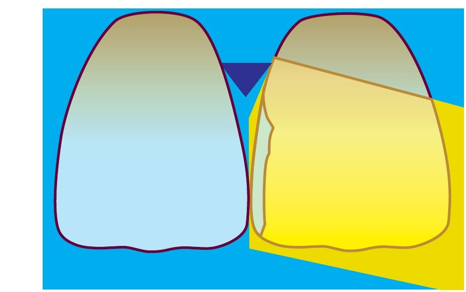
Індивідуально виготовлену матрицю встановлюємо в ясенний жолобок під завісу рабердаму і фіксуємо міжзубним клинчиком. Проводимо очищувальне кислотне протравлювання, висушуємо поверхню, вносимо і розподіляємо повітряним струменем адгезив і проводимо світлову полімеризацію. Вносимо прозорий відтінок мікрогібридного композиту, розподіляємо тонкою гладилкою уздовж контактної поверхні і по матриці з вестибулярної сторони проштовхуємо композит під матрицю до його появи на оральній поверхні.
Моделювання контактної поверхні
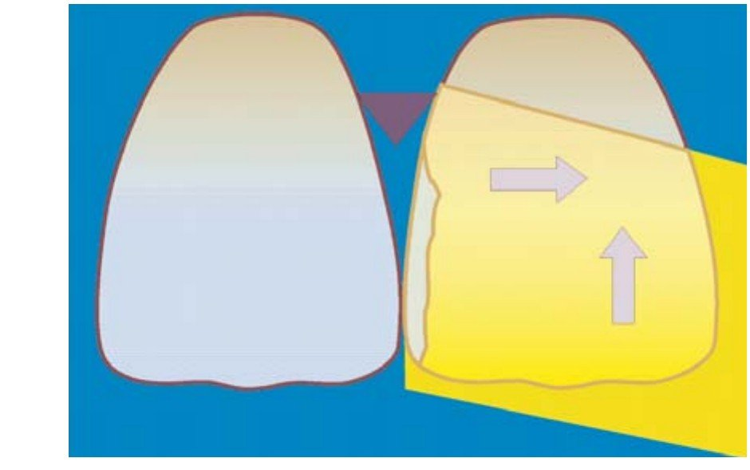
Фіксуємо оральну частину матриці пальцем лівої руки і злегка притираємо композит до піднебінної поверхні. Потім натягуємо вестибулярну частину матриці по шийці і переміщуємо вниз та медіально до зміщення контакту матриці із сусідньою поверхнею на необхідній висоті контактного пункту. При натягуванні матриці вниз і медіально композит зміщується від міжзубного клинчика до ріжучого краю. Ця дія має бути одноразовою, оскільки у випадку невдачі повторення призведе до відриву композиту від поверхні зуба.
Установка контактного пункту
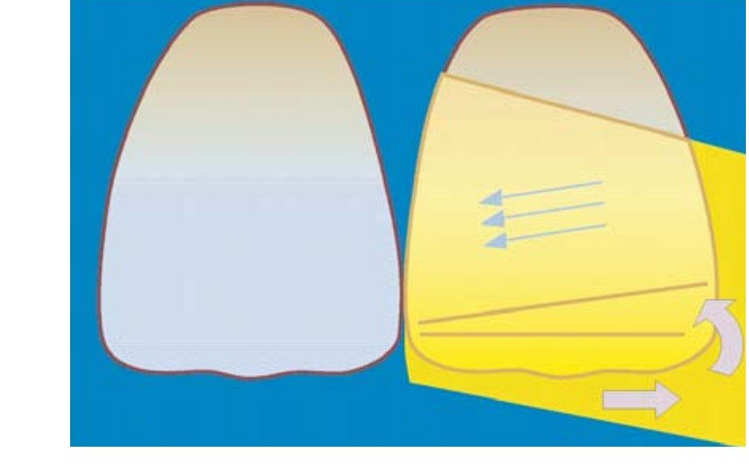
Круговим рухом великого пальця лівої руки по вестибулярній поверхні утворюємо складку і встановлюємо тим самим контактний пункт на необхідній висоті. Завдяки утворенню складки частина матриці, яка нижче складки, відхиляється до реставрованої контактної поверхні, формуючи кутик ріжучого краю, надлишок композиту при цьому видаляється по ріжучому краю. Фіксуємо досягнутий результат формування контактної поверхні світловою полімеризацією протягом 10 с вестибулярно і орально.
Видалення надлишків і моделювання кутика
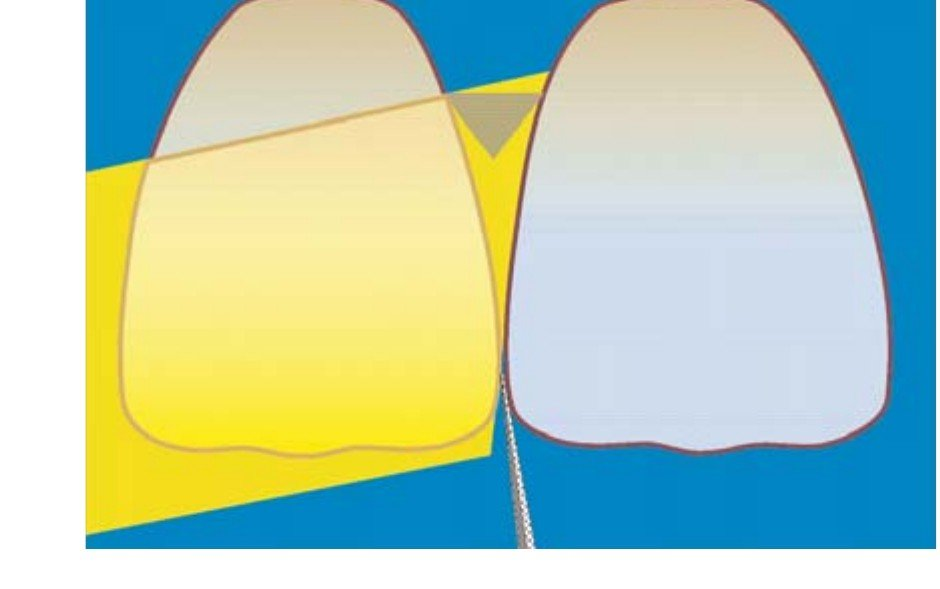
Для візуальної оцінки контактної поверхні видаляємо використану матрицю, а потім знову встановлюємо її для захисту контактної поверхні сусіднього зуба. Тонким довгим фінішним бором видаляємо надлишки по кутах контактної поверхні: на переході контактної поверхні в оральну і вестибулярну поверхні за екватором коронки, складку по вестибулярній поверхні і на кутику ріжучого краю. Кутик ріжучого краю моделюємо з трьох боків: за профілем, з вестибулярного боку і з орального боку.
Фінішна обробка контактної поверхні
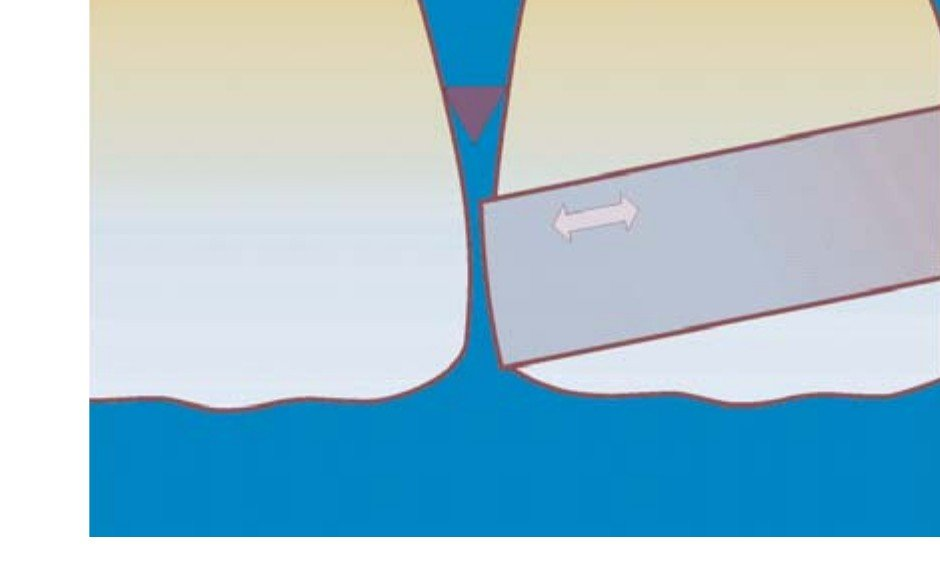
Після формування кутика ріжучого краю на контактній поверхні може утворитися сходинка через товщину кінчика фінішного бору. Цю сходинку необхідно видалити металевою абразивною смужкою під захистом міжзубного клинчика. Цією ж металевою смужкою видаляємо глянсовий шар з опуклої частини контактної поверхні. Лавсановими абразивними смугами різної зернистості видаляємо глянсовий шар з увігнутої частини контактної поверхні і формуємо крайове прилягання реставрації по шийці зуба.
Перевірка контактної поверхні
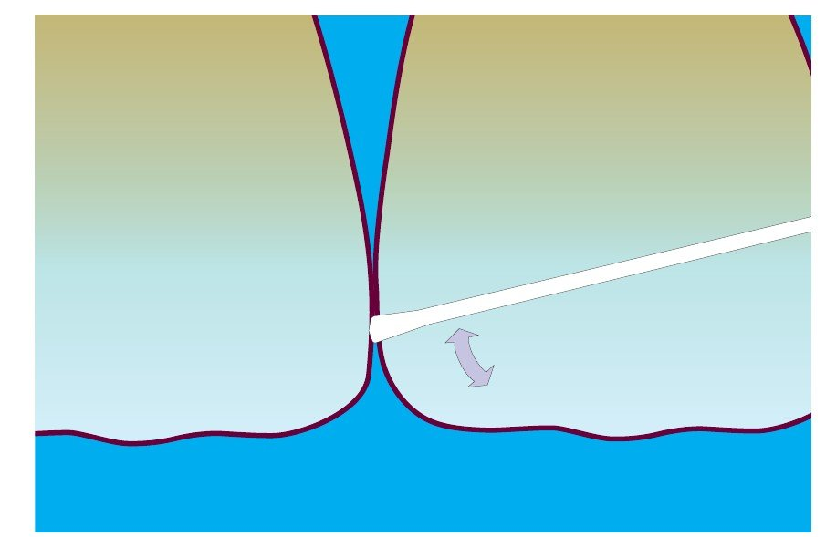
Якість сформованих контактних поверхонь і контактного пункту перевіряємо як мінімум 4 способами: зубним флосом — гладкість контактних поверхонь, лавсановою смужкою — щільність контактного пункту, на знімку цифровою камерою — форму контактних поверхонь і висоту контактного пункту, на рентгенівському знімку — крайове прилягання реставрації по шийці зуба. Контактний пункт повинен бути точковим на заданій висоті і мати звичайну щільність, контактні поверхні мають бути заданого профілю.
Клінічний приклад
Цей клінічний приклад був виконаний спеціально для демонстрації техніки відновлення контактних поверхонь передніх зубів. У звичайній клінічній роботі такої кількості знімків при реставрації двох зубів ми, звичайно, не робимо. У клінічному прикладі представлені деякі подробиці техніки моделювання контактних поверхонь і контактного пункту та практичні поради.
Потрібно замінити дві реставрації класу III на контактних поверхнях зубів 12 і 11, виконані в класичному стилі з додатковими ретенційними майданчиками на піднебінній поверхні. Причина заміни реставрації полягає передусім у порушенні крайової герметичності, але також і в забарвлюванні поверхні самого композиту.
Очевидні ознаки порушення крайової герметичності реставрації визначаються у вигляді втрати прозорості емалі по краях реставрації, крайового профарбовування харчовими барвниками з'єднання реставрації та емалі у пришийковій ділянці і, як наслідок, набряклості та ретракції міжзубного сосочка.
Головне, що має бути продемонстровано, — як виконати контактний пункт на одному і тому ж рівні, коли форма двох контактних поверхонь різна.
Білясті горизонтальні смуги флюорозної поверхневої емалі, як і те, що зуб 11 девітальний, ускладнюють завдання отримання «невидимої реставрації». Вітальний зуб 12 незначно зміщений орально, і це вносить додатковий елемент складності у майбутню реставрацію.
Зовнішній вигляд зубів до реставрації
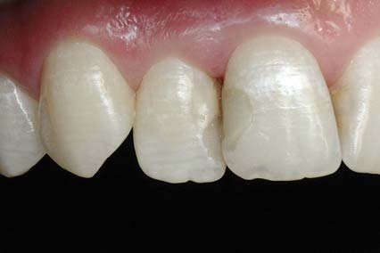
Білясті горизонтальні смуги, які швидко і значно посилюються при пересиханні, є поверхневими, це результат взаємодії фторгідроксиапатиту із зовнішнім середовищем у період дозрівання емалі. Підповерхнева емаль має звичайну прозорість, тому досить зішліфувати флюорозну емаль на глибину 100-120 мкм, щоб отримати стійкий естетичний ефект. Але при такій емалі можна і розфарбувати вестибулярну поверхню реставрацій білими плямами і смугами.
Препарування у вільному дизайні
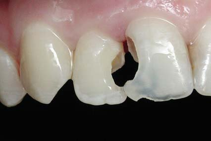
Вільний дизайн — це препарування, орієнтоване на дефект. Порожнина в зубі після такого препарування має округлу, стрес-резистентну, форму. По ріжучому краю зуба 11, уздовж країв дефектів та у пришийковій зоні латерального і центрального різців залишена емаль, позбавлена підтримки дентину. У проекції рогу пульпи зуба 12 залишено пігментований і не дуже щільний дентин, у зубі 11 видалено фосфат-цемент з центральної частини. Фінішними борами скошено емалеві краї.
Адгезивна підготовка зубних тканин
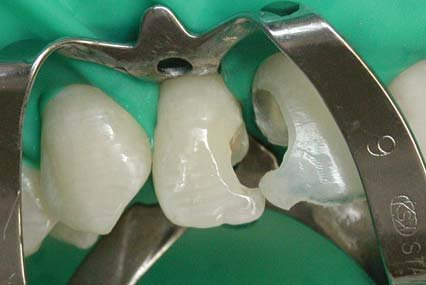
Адгезивна підготовка вітального латерального і девітального центрального різців проведена по черзі, але протокол був однаковим: послідовне кислотне протравлювання емалі та дентину, внесення й експозиція однокомпонентної адгезивної системи, видалення розчинника повітряним струменем і світлова полімеризація. Однак у вітальному зубі після світлової полімеризації на поверхню дентину внесено, притерто і полімеризовано шар текучого композиту для запобігання ефекту водних дерев.
Реставрації виконані в основі
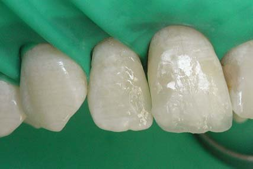
Реставрація в основі виконана мікрогібридним і наногібридним композитами у біоміметичній (чотиришаровій) техніці: білий відтінок підвищеної опаковості (навколопульпарний дентин) у топографії порожнини зуба, опаковий відтінок (основний дентин) у топографії дентину і відтінок тіла (основна емаль), відтінок емалі (поверхнева емаль) у топографії емалі. Шари композиту укладені послідовно: спочатку світлий центр зуба, потім оральна стінка і, на завершення, вестибулярна стінка.
Контурування лавсанової матриці
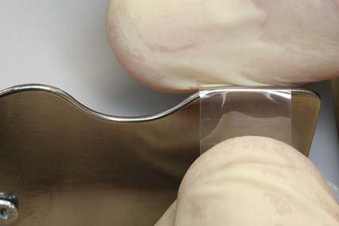
Дві лавсанові смужки шириною 11 мм відконтуровані на нашому пристосуванні для кожної з двох контактних поверхонь індивідуально. Форма індивідуально контурованих матриць залежить від анатомічної форми поверхні, що реставрується (менша опуклість матриці для медіальної поверхні, більша опуклість матриці для латеральної поверхні), а також від відстані між шийками та анатомічної форми коронок зубів.
Установка матриці і розклинювання
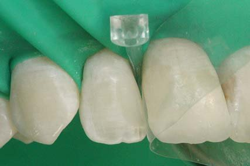
Медіальна контактна поверхня зуба 12 відновлена, включаючи етапи моделювання, перевірки ширини коронки штангенциркулем та шліфування. Потім між латексною завісою і шийкою зуба 11 встановили другу матрицю. Після незначного відтягування завіси «на себе» вводимо у міжзубний проміжок пластиковий клинчик, який потрібно спрямовувати спочатку вгору, а потім, повернувши, — вниз. Так можна уникнути пошкодження оральної частини міжзубного сосочка, довшої, ніж його вестибулярна частина.
Адгезивна підготовка поверхні
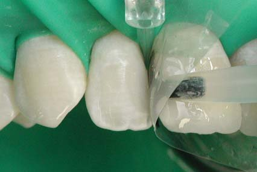
При встановленні матриці під латексну завісу можливе потрапляння ясенної рідини в робочу зону. Тому адгезивну підготовку починаємо з 10-секундного очищувального кислотного протравлювання. Потім після повного висушування робочої зони повітряним струменем вносимо пензликом на контактну поверхню класичний адгезив. Він не містить еластомерів, тому при полімеризації повністю інгібується киснем. Адгезив розподіляємо повітряним струменем і полімеризуємо.
Внесення та адаптація композиту
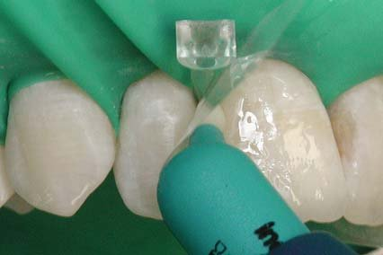
Композит вносимо в найширший простір — між клинчиком і контактним пунктом. Для відновлення вузького простору контактної поверхні ліпше підходить реставраційний композит, який має м'якшу консистенцію і добре розподіляється по поверхні, а також легко вклеюється. Дуже тонкою гладилкою притираємо композит до адгезивної поверхні біля шийки, уздовж поверхні коронки і по кутику ріжучого краю з орального і вестибулярного боку.
Фіксація матриці орально і по шийці
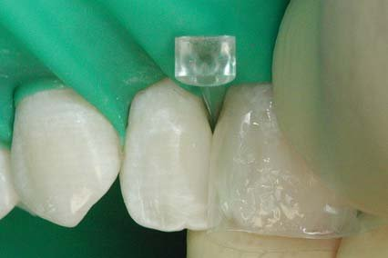
Контактні поверхні легше формувати, перебуваючи з протилежного боку, тому для латеральних поверхонь правих зубів слід перейти на робоче місце асистента. Указівним пальцем лівої руки фіксуємо оральну частину контурної матриці і легкими рухами притираємо композит до поверхні. Потім пальцями правої руки натягуємо матрицю по шийці з такою силою, щоб надлишки композиту під матрицею були повністю видавлені з шийки зуба, як це показано на знімку.
Позиціонування контактного пункту
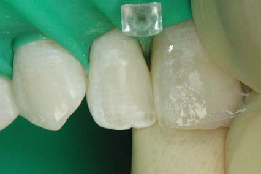
Утримуючи натяг матриці по шийці, переміщуємо вестибулярну частину матриці у пришийковий бік, завдяки чому композит продовжує видавлюватися у бік ріжучого краю. У цей час місце прилягання контурної матриці до медіальної поверхні латерального різця (умовний контактний пункт) також переміщується вниз, у бік ріжучого краю. Композит наповнює об'єм матриці, і тому на цьому етапі ми вже можемо побачити форму контактної поверхні від шийки до контактного пункту.
Формування складки
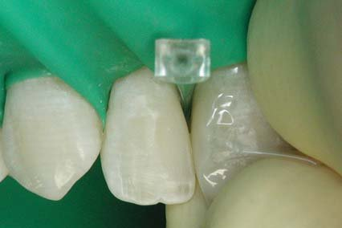
Як тільки у своєму переміщенні вниз прилягання матриці досягне найбільш опуклої точки протилежної, медіальної поверхні латерального різця, круговим рухом великого пальця лівої руки складаємо вестибулярну частину контурної матриці навпроти спланованого контактного пункту. Якщо прилягання матриці перемістилося нижче контактного пункту і матриця відокремилася від сусідньої поверхні, процедуру слід повторити, починаючи з притирання композиту. Полімеризацію проводить асистент.
Оцінка контактної поверхні
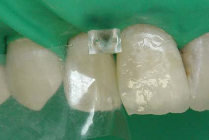
Завдяки складці на вестибулярній поверхні нижній край матриці загортається до реставрованого зуба, утворюючи практично завершену форму контактної поверхні. Після полімеризації композиту з вестибулярного і орального боку перевертаємо матрицю і встановлюємо її по інший бік клинчика. Тепер можна візуально оцінити отриману форму контактної поверхні. Штангенциркулем вимірюємо фактичну ширину коронки, вона повинна бути на 0,1-0,2 мм більшою, ніж проектна.
Видалення надлишку біля шийки
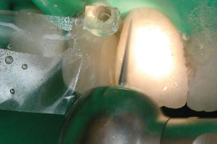
Така послідовність побудови реставрації, коли спочатку зуб реставрують в основному, а потім окремим етапом контактні поверхні, дозволяє уникнути додаткового внесення композиту. У цій техніці потенційно утворюються чотири надлишки композиту, які легко видаляються прямим фінішним бором. Перший надлишок може бути по шийці, за екватором, на переході контактної поверхні у вестибулярну. Для його видалення досить пройти бором кілька разів уздовж поверхні.
Видалення складки на передній поверхні
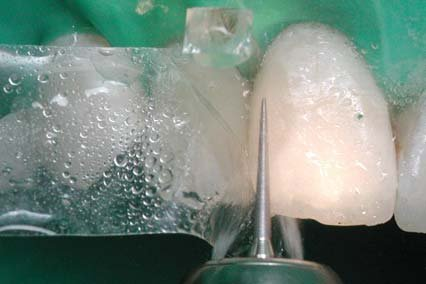
Другий надлишок — це власне складка на вестибулярній поверхні. Цей надлишок потрібно видалити до прозорого емалевого відтінку основної реставрації. Рухи бора повинні бути горизонтальними із заходом на контактну поверхню для формування вертикального крайового переходу контактної поверхні у вестибулярну. Також на цьому етапі можна видалити надлишкову ширину коронки, якщо вона ширша від необхідної на 0,2 мм і більше. Надлишок, який менше 0,2 мм, краще видаляти абразивними смужками.
Моделювання кутика ріжучого краю
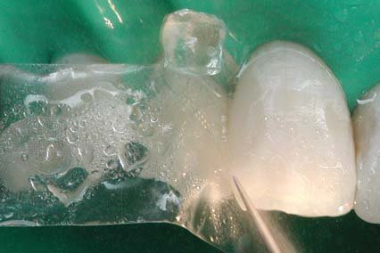
Третій надлишок — це сам кутик ріжучого краю, і видалення цього надлишку одночасно є моделюванням кутика коронки зуба, що реставрується. Форма кутика досить складна, і моделювати його слід ковзаючими рухами з трьох боків: фронтальний профіль, перехід кутика вестибулярно і перехід на оральну поверхню, де до кутика примикає крайовий валик. Головне, не забути, що медіальний кутик ріжучого краю завжди гостріший, а дистальний, як тут, — округліший.
Видалення надлишку біля шийки
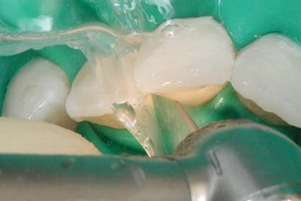
Четвертий надлишок композиту міститься за піднебінним горбиком, при переході екватора коронки в шийку зуба. Для видалення цього надлишку слід легким дотиком фінішного бора пройти кілька разів горизонтально уздовж піднебінного горбика. Різна щільність композиту і емалі дозволить ковзаючому фінішному бору НЕ заглибитися в зубні тканини, а латексна завіса надійно захистить від пошкодження ясенний край зуба, що реставрується. Цю процедуру з водяним охолодженням дуже важко виконати, дивлячись у дзеркало.
Проміжний вигляд зі сходинкою
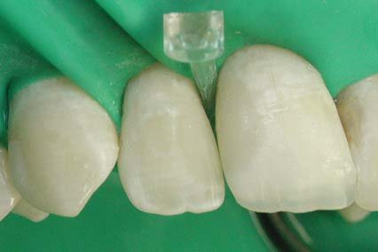
Після видалення матриці з міжзубного проміжку нам надається можливість оцінити отриманий контактний пункт і форму контактних поверхонь: опуклі точки контактних поверхонь мають бути на одному рівні, медіальна поверхня — прямішою, а латеральна — опуклішою. Після моделювання кутика ріжучого краю, як правило, по фронтальному профілю ближче до контактного пункту ми виявляємо сходинку, величина якої залежить від товщини кінчика фінішного бора.
Видалення глянцевого шару
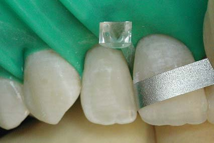
При полімеризації під лавсановою матрицею поверхневий шар композиту отверджується без доступу повітря і утворює блискучу, глянсову поверхню. Однак він проникний для харчових барвників, легко стирається і в стандартній техніці підлягає обов'язковому видаленню. Одночасно потрібно видалити і сходинку на переході кутика в контактний пункт. Опуклу частину контактної поверхні потрібно обробляти тонкою металевою абразивною смужкою, що дозволяє контролювати форму поверхні.
Обробка крайового прилягання по шийці
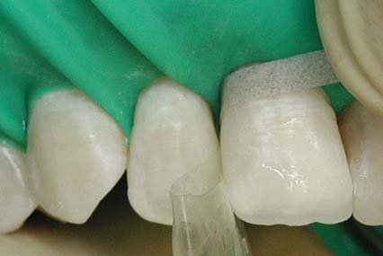
Увігнуту пришийкову частину контактної поверхні можна обробляти лише лавсановою абразивною смужкою, що дозволяє створити плавний перехід реставрації на шийку зуба, що реставрується. Металева смужка тут буде залишати подряпини на поверхні цементу. Складеною удвічі лавсановою смужкою блокуємо контактний пункт і видаляємо клинчик. Спочатку працюємо грубозернистою частиною смужки, а потім, після змивання абразиву, що відокремився, — дрібнозернистою частиною абразивної смужки.
Перевірка щільності контактного пункту
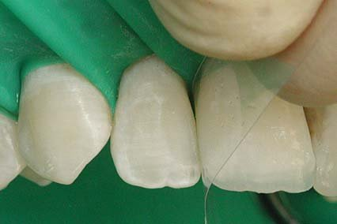
Щільність контактного пункту перевіряємо лавсановою смужкою товщиною 50 мкм. Для цього нову лавсанову смужку встановлюємо між зубами і повільно виводимо з контактного пункту. Смужка повинна бути встановлена досить легко — це означає, що на контактних поверхнях немає сходинок. За опором, з яким контактуючі зуби утримують смужку, яка виводиться, можна судити про щільність контактного пункту. Для достовірності тесту достатньо трохи потренуватися на інтактних зубах.
Перевірка гладкості контактних поверхонь
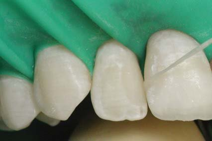
Перевірити гладкість контактних поверхонь можна зубним флосом. Для цього флос вводимо в міжзубний проміжок і кілька разів проводимо через контактний пункт — флос не повинен розшаровуватися. Потім переміщуємо флос у під'ясенну зону і вертикальними рухами перевіряємо крайове прилягання реставрації по центру контактної поверхні, по переходу на вестибулярну поверхню і по переходу на оральну поверхню — флос не повинен чіплятися за край реставрації або розшаровуватися.
Рентген-контроль крайового прилягання
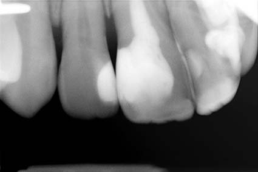
Важливим контрольним тестом крайового прилягання реставрації може бути рентгенологічний знімок. Надлишки композиту можуть перебувати на поверхні кореня у природних заглибленнях і тому не можуть бути виявлені флосом, але їх добре видно на рентген-знімку. Такий тест є внутрішнім стандартом у нашій клініці і виконується при кожній побудові контактного пункту за умови згоди пацієнта на виконання рентгенівського знімка, не передбаченого загальноприйнятим стандартом.
Побудовані контактні поверхні
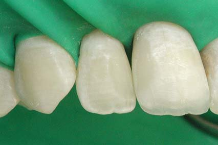
До зняття рабердаму ще можна провести корекцію реставрацій із застосуванням адгезивної техніки. У разі необхідності такої корекції після зняття рабердаму доведеться встановлювати нову завісу. Тому оцінка виконаних реставрацій, контактних поверхонь і контактного пункту повинна бути особливо ретельною. Важливо також візуально і на цифровому знімку порівняти реставрований зуб із симетричними верхніми різцями за формою контактних поверхонь і позицією контактного пункту.
Формування шийки без рабердаму
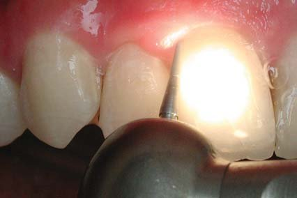
З видаленням завіси під'ясенна зона зубів, що реставруються, стає доступною для обробки, яка виконується фінішним бором зернистістю 30 мкм. Робоча частина бору має форму циліндра, кінчик якого в межах останніх 2 мм, плавно закруглюючись, переходить у конусоподібну форму. Кінчик обертового бора вводимо під ясна, встановлюємо конусоподібну частину уздовж поверхні шийки і горизонтальними ковзаючими рухами закругленою частиною бору формуємо перехід коронки в шийку зуба.
Шліфування контактних поверхонь
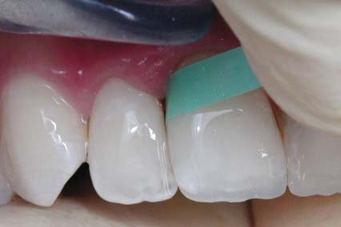
Після інтеграції реставрацій в оклюзії та шліфування виконаних реставрацій силіконовими формами Енхенс (порожнистий конус для під'ясенної зони та конус для оральних і вестибулярних поверхонь) проводимо шліфування контактних поверхонь абразивною лавсановою смужкою зернистістю 10-15 мкм. На час шліфування контактного пункту, щоб не зменшилася його щільність, можна клинчиком злегка розвести зуби. Після шліфування реставрації повинні мати у висушеному стані бархатисту поверхню.
Полірування контактних поверхонь
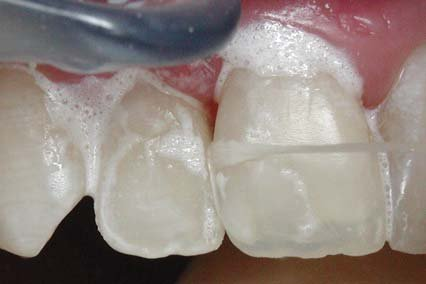
Шліфування завершується фінішною полімеризацією, своєрідним «загартуванням» поверхні остаточної форми реставрацій. Далі йде полірування доступних поверхонь реставрацій формами ПоГоу (без води) і губками Енхенс з полірувальною пастою Призма Глос Екстрафайн двома етапами (без води і з додаванням води краплями). Цією ж полірувальною пастою і зубним флосом у такі ж самі два етапи слід відполірувати і обидві контактні поверхні реставрованих зубів, недоступні для звичайного полірування.
Реставровані зуби після полірування
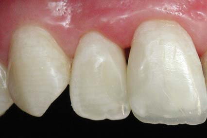
Реставрація зубів 12 і 11 класу III — завершена! Форма реставрованих зубів відповідає нормальній анатомії, поверхня реставрацій структурована і блищить так само, як і поверхня полірованої емалі. Пересихання зубних тканин робить видимими межі з'єднання композиту і емалі по ріжучому краю. Також через пересихання зубних тканин відрізняється вигляд вестибулярної поверхні реставрацій і емалі, незважаючи на те, що вестибулярна поверхня флюорозної емалі була зішліфована.
Реставровані зуби через 7 днів
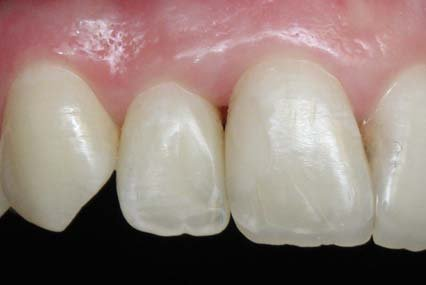
На контрольному огляді через тиждень видимі межі між реставраціями та зубними тканинами відсутні — наслідок відновлення водного насичення реставрованих зубів. Блиск поверхні реставрацій свідчить про адекватне індивідуальне чищення зубів та низьку абразивність зубної пасти. Ясенний край у нормі, міжзубний сосочок практично заповнив простір від шийки до контактного пункту, однак для повного його відновлення знадобиться, можливо, місяць-два.
Таким чином, контактний пункт між двома контактними поверхнями коронок різної довжини був виконаний на заданому рівні і необхідної щільності, завдяки формуванню на оригінальному пристрої індивідуальних контурних матриць, розклинюванню і техніці установки рівня контактного пункту. Продемонстрована процедура моделювання, шліфування і полірування контактних поверхонь. Представлені клінічні тести дозволяють контролювати щільність контактного пункту, гладкість контактних поверхонь і крайове прилягання реставрацій в зоні шийки зуба по центру, при переході на оральну і на вестибулярну поверхні.
Рентгенівське дослідження крайового прилягання реставрацій на контактних поверхнях може бути стандартом контролю якості клінічної процедури побудови контактного пункту.
Через 7 років... Розчарування і досада!
Пацієнти і стоматологи планують свої зустрічі в клініці згідно з кратністю динамічного спостереження. Однак життя вносить свої корективи в цю планову систему наших взаємин: частина пацієнтів регулярно відвідує клініку і отримує з нашого боку активну підтримку свого стоматологічного здоров'я, інші відвідують клініку тільки у зв'язку з виниклою проблемою в стоматологічному здоров'ї, а деякі продовжують шукати свій ідеал, змінюючи стоматологів одного за одним...
Третій варіант взаємин пацієнта і лікаря найбільш невдалий, оскільки зміна стоматолога поглиблює проблеми здоров'я пацієнта: черговий стоматолог, щиро піклуючись про пацієнта і не довіряючи стоматологові попередньому, починає переробляти всі реставрації на свій лад, видаляючи нові і нові шари природних зубних тканин, завдаючи тим самим ненавмисно непоправної шкоди стоматологічному здоров'ю нового пацієнта!
Так склалося, що з нашою пацієнткою, котру запросили як модель з міського конкурсу краси для демонстрації нашої техніки відновлення контактних поверхонь передніх зубів, ми контакт втратили... Кілька разів домовлялися по телефону про зустріч у клініці з метою контролю за станом реставрацій і контактних поверхонь, але щоразу щось не складалося... І ось через 7 років зустріч все-таки відбулася, бо пацієнтці потрібна була порада щодо вибору вінірів... Оглядаючи реставровані зуби, автор відчув глибокий жаль і розчарування побаченим, і цими фотознімками можу поділитися!
Реставровані зуби через 7 років
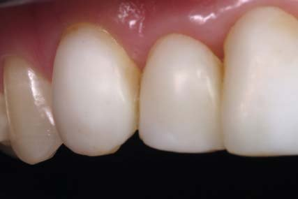
Контактні поверхні зубів 12 і 11 на місці, але оцінити їх стан неможливо через композитні вініри, що покривають усю передню поверхню реставрованих зубів. Опукла форма вінірів, однотонний білий колір, очевидно, є наслідком синдрому «журнальних зубів», стереотипом масової культури, що нав'язується обкладинками глянцевих журналів. І як контрастує природна поверхня першого премоляра з цим стоматологічним ліпленням!
Початковий стан верхніх передніх зубів 7 років тому
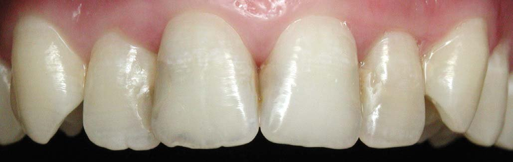
На знімку зафіксовано стан усіх верхніх передніх зубів, який і призвів до запрошення фіналістки міського конкурсу краси на реставрацію контактних поверхонь для підготовки статті на цю тему. Наявність невеликих, на перший погляд, пломб класу III по Блеку, що відрізняються за кольором і мають навислі краї з недостатньо обробленою поверхнею, давала можливість виконати рутинну реставрацію з прогнозованим результатом. І навіть те, що зуб 11 де-факто виявився девітальним, не створило особливих проблем у процесі демонстраційної реставрації!
Сучасний стан верхніх передніх зубів через 7 років
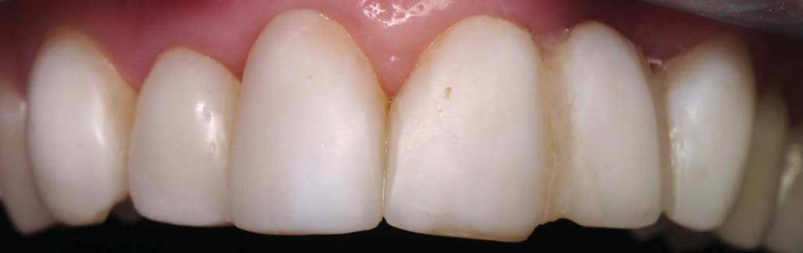
Опукла форма передніх зубів яскравого кольору і збільшеної ширини, по ідеї як володаря, так і виконавця цих реставрацій, повинна викликати чарівне враження у спостерігача, який перебуває на соціальній відстані. Ясенний край, набряклий через обсяг вестибулярної поверхні реставрацій, доповнює цю непривабливу клінічну картину... Щоправда, корекція форми ікол, з нашої точки зору, була виправданим рішенням, оскільки закриті занадто високо розташовані амбразури між іклами і латеральними різцями, що були наслідком повороту ікол по осі.
Вигляд верхніх передніх зубів у дзеркалі
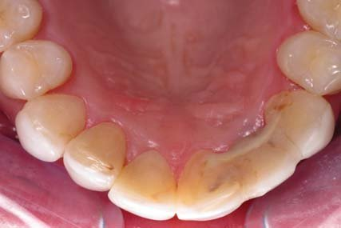
На знімку по осі зубів, виконаному в оклюзійному дзеркалі, видно, що піднебінна поверхня реставрованих нами зубів однорідна, відсутнє крайове забарвлювання, міжзубний сосочок у звичайному стані. Також добре видно, що вініри значно збільшили вестибуло-оральний розмір зубів, передні зуби стали ширшими за рахунок зменшення вертикальних амбразур... І ці порушення анатомічної форми зубів особливо контрастують з чудовою анатомією перших премолярів.
Контрольна рентгенограма зуба 22
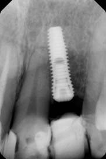
Рентгенівський знімок лівих різців виявив встановлений імплантат на місці латерального різця... І минуло лише 7 років з часу наявності невеликої пломби на контактній поверхні зуба до його видалення! Залишається сподіватися, що причина видалення латерального різця і установки імплантата на його місці мала медичні показання, а не була продиктована бажанням пацієнтки обзавестися «модним і широко рекламованим дивайсом», адже стоматології відомі й такі мотиви проведення імплантації!
Висновок
Контактні поверхні підкоряються загальним закономірностям у зубному ряду, мають S-подібну форму, утворюються емаллю і вирізняються опуклістю з медіального і дистального боку.
Наш спосіб побудови контактних пунктів передбачає моделювання контактних поверхонь на завершення побудови конструкції реставрованого зуба, використовуючи індивідуально виготовлені об'ємні лавсанові матриці. Він дозволяє створювати контактні пункти на заданій висоті та із заданою щільністю.
Якість контактів між зубами вимагає обов'язкового клінічного контролю на цифровому знімку, лавсановою матрицею, зубним флосом і на рентгенівському знімку.
За два десятиліття в техніці нічого не змінилося, просто вона була відпрацьована в деталях, і результат — анатомічно правильні контакти необхідної щільності — став більш прогнозованим!
Стан контактів між зубами вимагає динамічного спостереження для контролю над щільністю, а головне, щоб вчасно вберегти своїх пацієнтів від лукавих естетичних бажань і дуже вмілих рук колег-стоматологів, готових ці бажання виконати і перевиконати...
З пацієнтами не розлучайтеся!
Література
- Макеева И.М. Восстановление зубов светоотверждаемыми композитными материалами. — Москва: ОАО Стоматология, 1997. — С.56.
- Радлинский С.В. Реставрация передних зубов // ДентАрт. — 1998. — №3. — С.29-41.
- Радлинский С.В. Финишная отделка реставраций // ДентАрт. — 1998. — №4. — С.72-86.
- Радлинский С.В. В XXI век — вместе с Сил энд Протект // Новости Дентсплай. — 2000. — С.18-20.
- Радлинский С.В. Реставрация контактных поверхностей верхних передних зубов // ДентАрт. — 2008. — №1. — С.34-48.
- Rufenacht C.R. Fundamentals of Esthetics. — Chicago: Quintessence Publ. Co., 1990. — P.116-119.
- Roberson TM, Heymann HO, Swift EJ. Sturdevant's Art & Science of Operative Dentistry. — St.Louis: Mosby. — 2003. — P.140-148.
- Roulet J.-F., Degrange M. Adhesion: The Silent Revolution in Dentistry. — Carol Stream: Quintessence P.C. — 2000. — P.235-251.
- Tyldesly W.R. The mechanical properties of human enamel and dentine // Br.Dent.J. — 1959. — 106. — P.269-278.